생산자동화산업기사 (2018-03-04 기출문제)
1과목: 기계가공법 및 안전관리
1. 밀링가공에서 일반적인 절삭속도 선정에 관한 내용으로 틀린 것은?
- 거친 절삭에서는 절삭속도를 빠르게 한다.
- 다듬질 절삭에서는 이송속도를 느리게 한다.
- 커터의 날이 빠르게 마모되면, 절삭 속도를 낮춘다.
- 적정 절삭속도보다 약간 낮게 설정하는 것이 커터의 수명연장에 좋다.
(정답률: 64%)

2. W, Cr, V, Co 들의 원소를 함유하는 합금강으로 600℃까지 고온경도를 유지하는 공구재료는?
- 고속도강
- 초경합금
- 탄소공구강
- 합금공구강
(정답률: 59%)
3. 밀링머신에서 사용하는 바이스 중 회전과 상하로 경사시킬 수 있는 기능이 있는 것은?
- 만능 바이스
- 수평 바이스
- 유압 바이스
- 회전 바이스
(정답률: 68%)
4. 탭으로 암나사 가공작업 시 탬의 파손원인으로 적절하지 않은 것은?
- 탭이 경사지게 들어간 경우
- 탭 재질의 경도가 높은 경우
- 탭의 가공 속도가 빠른 경우
- 탭이 구멍바닥에 부딪쳤을 경우
(정답률: 77%)
5. 기어절삭가공 방법에서 창성법에 해당하는 것은?
- 호브에 의한 기어가공
- 형판에 의한 기어가공
- 브로칭의 의한 기어가공
- 총형 바이트에 의한 기어가공
(정답률: 57%)
6. 연삭기의 이송방법이 아닌 것은?
- 테이블 왕복식
- 플랜지 컷 방식
- 연삭 숫돌대 방식
- 마그네틱 척 이동 방식
(정답률: 61%)
7. 다음 중 각도를 측정할 수 있는 측정기는?
- 사인 바
- 마이크로미터
- 하이트 게이지
- 버니어캘리퍼스
(정답률: 85%)
8. 머시닝센터에서 드릴링 사이클에 사용되는 G-코트로만 짝지어진 것은?
- G24, G43
- G44, G65
- G54, G92
- G73, G83
(정답률: 63%)
9. 선반에서 긴 가공물을 절삭할 경우 사용하는 방진구 중 이동식 방진구는 어느 부분에 설치하는가?
- 베드
- 새들
- 심압대
- 주측대
(정답률: 63%)
10. 터릿선반에 대한 설명으로 옳은 것은?
- 다수의 공구를 조합하여 동시에 순차적으로 작업이 가능한 선반이다.
- 지름이 큰 공작물을 정면가공하기 위하여 스윙을 크게 만든 선반이다.
- 작업대 위에 설치하고 시계부속 등 작고 정밀한 가공물을 가공하기 위한 선반이다.
- 가공하고자 하는 공작물과 같은 실물이나 모형을 따라 공구대가 자동으로 모형과 같은 윤곽을 깍아내는 선반이다.
(정답률: 62%)
11. 절삭공구 수명을 판정하는 방법으로 틀린 것은?
- 공구 인선의 마모가 일정량에 달했을 경우
- 완성가공된 치수의 변화가 일정량에 달했을 경우
- 절삭저항의 주 분력이 절삭을 시작했을때와 비교하여 동일할 경우
- 완성 기공면 또는 절삭가공 한 직후에 가공표면에 광탱이 있는 색조 또는 방점이 생길 경우
(정답률: 77%)
12. 태일러의 원리에 맞게 제작되지 않아도 되는 게이지는?
- 링 게이지
- 스냅 게이지
- 테이퍼 게이지
- 플러그 게이지
(정답률: 52%)
13. 연삭 작업에 관련된 안전사항 중 틀린 것은?
- 연삭숫돌을 정확하게 고정한다.
- 연삭숫돌 측면에 연삭을 하지 않는다.
- 연삭가공 시 원주 정면에 서 있지 않는다.
- 연삭숫돌 덮개 설치보다는 작업자의 보안경 착용을 권장한다.
(정답률: 82%)
14. 밀링 절삭 방법 중 상향절삭과 하향절삭에 대한 설명이 틀린 것은?
- 하향절삭은 상향절삭에 비하여 공구수명이 길다.
- 상향절삭은 가공면은 표면거칠기가 하향절삭보다 나쁘다.
- 상향절삭은 절삭력이 상향으로 작용하여 가공물의 고정이 유리하다.
- 커터의 회전방향과 가공물의 이송이 같은 방향의 가공방법을 하향절삭이라 한다.
(정답률: 72%)
15. 다음 연삭숫돌 기호에 대한 설명이 틀린 것은?
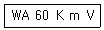
- WA : 연삭숫돌입자의 종류
- 60 : 입도
- m : 결합도
- V : 결합제
(정답률: 75%)
16. 측정자의 직선 또는 원호운동을 기계적으로 확대하여 그 움직임을 지치의 회전변위로 변환시켜 눈금으로 읽을 수 있는 측정기는?
- 수준기
- 스냅 게이지
- 게이지 블록
- 다이얼 게이지
(정답률: 72%)
17. 래핑에 대한 설명으로 틀린 것은?
- 습식래핑은 주로 거친 래핑에 사용한다.
- 습식래핑은 연마입자를 혼합한 랩액을 공작물에 주입하면서 가공한다.
- 건식래핑의 사용 용도는 초경질 합금, 보석 및 유리 등 특수재료에 널리 쓰인다.
- 건식래핑은 랩제를 고르게 누른 다음 이를 충분히 닦아내고 주로 건조상태에서 래핑을 한다.
(정답률: 57%)
18. 다음 중 금속의 구멍작업 시 배출이 용이하고 가공 정밀도가 가장 높은 드릴날은?
- 평 드릴
- 센터 드릴
- 직선홈 드릴
- 트위스트 드릴
(정답률: 73%)
19. 드릴의 속도가 V(m/min), 지름이 d(mm)일 때, 드릴의 회전수 n(rpm)을 구하는 식은?
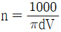
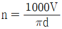
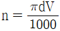
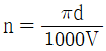
(정답률: 77%)
20. 절삭제의 사용 목적과 거리가 먼 것은?
- 공구수명 연장
- 절삭 저항의 증가
- 공구의 온도상승 방지
- 가공물의 정밀도 저하방지
(정답률: 79%)
2과목: 기계제도 및 기초공학
21. 구멍과 축의 억지 끼워 맞춤에서 최대 죔새의 설명으로 옳은 것은?
- 구멍의 최대허용치수-축의 최대최대허용치수
- 구멍의 최소허용치수-축의 최소허용치수
- 축의 최소허용치수-구멍의 최대허용치수
- 축의 최대허용치수-구멍의 최소허용치수
(정답률: 69%)
22. V-벨트 풀리의 도시에 관한 설명으로 옳지 않은 것은?
- V-벨트 풀리 홈 부분의 치수는 형별과 호침 지름에 따라 결정된다.
- V-벨트 풀리는 축 직각 방향의 투상을 정면도(주투상도)로 할 수 있다.
- 암(Arm)은 길이 방향으로 절단하여 도시한다.
- V-벨트 풀리에 적용하는 일반용 V고무벨트는 단면치수에 따라 6가지 종류가 있다.
(정답률: 64%)
23. 강재의 종류와 그 기호가 잘못 짝지어진 것은?
- SCr420 : 크로뮴 강
- SCM420 : 니켈 크로뮴 강
- SMn420 : 망가니즈 강
- SMnC420 : 망가니즈 크로뮴 강
(정답률: 78%)
24. 기계제도에서 사용하는 선의 종류에 대한 용도 설명 중 잘못된 것은?
- 굵은 실선 : 대상물의 보이는 부분의 모양 표시
- 가는 1점 쇄선 : 도형의 중심 표시
- 가는 2점 쇄선 : 대상물의 일부는 파단한 경계 표시
- 가는 파선 : 대상물의 보이지 않는 부분의 모양 표시
(정답률: 64%)
25. 그림과 같은 등각 투상도에서 화살표 방향에서 본 면을 정면이라 할 때 제 3각법으로 3면도가 올바르게 그려진 것은?
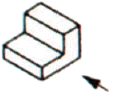
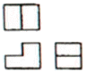
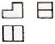
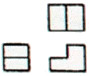
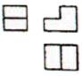
(정답률: 66%)
26. 투상도를 그릴 때 선이 서로 겹칠 경우 나타내야 할 우선 순위로 옳은 것은?
- 중심선＞숨은선＞외형선
- 숨은선＞절단선＞중심선
- 외형선＞중심선＞절단선
- 외형선＞중심선＞숨은선
(정답률: 76%)
27. 그림과 같은 원뿔을 전개하였을 때 전개도의 중심각이 120°가 되려면 L의 치수는 얼마인가? (단, 원뿔 밑면의 지름은 100mm이다.)(오류 신고가 접수된 문제입니다. 반드시 정답과 해설을 확인하시기 바랍니다.)
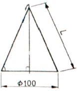
- 150mm
- 200mm
- 120mm
- 180mm
(정답률: 52%)
28. 가공 모양의 기호에 대한 설명으로 잘못된 것은?
- = : 가공에 의한 컷의 줄무늬 방향이 기호를 기입한 그림의 투영한 면에 평행
- X : 가공에 의한 컷의 줄무늬 방향이 기호를 기입한 그림의 투영면에 비스듬하게 2방향으로 교차
- M : 가공에 의한 컷의 줄무늬가 여러 방향
- R : 가공에 의한 컷의 줄무늬가 기호를 기입한 면의 중심에 대하여 거의 동심원 모양
(정답률: 72%)
29. 그림과 같은 입체도를 제3각법으로 올바르게 나타낸 투상도는?
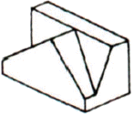
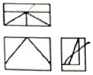
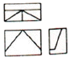
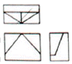
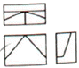
(정답률: 73%)
30. 나사 표기가 “G 1/2”이라 되어 있을 때, 이는 무슨 나사인가?
- 관용 평행나사
- 29° 사다리꼴나사
- 관용 테이퍼나사
- 30° 사다리꼴나사
(정답률: 55%)
31. 다음 그림에서 F1, F2의 합성(F)의 크기에 대한 표현식으로 옳은 것은?
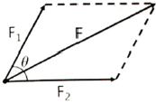
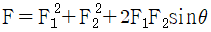
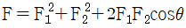
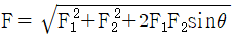
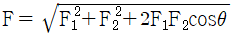
(정답률: 53%)
32. 응력과 압력에 관한 설명으로 틀린 것은?
- 단위는 N/m2이다.
- 1kgf/cm2=9.8×104N/m2로 나타낸다.
- 응력과 압력은 물리력으로 뉴턴의 제3법칙에 근거한다.
- 내부 힘에 대한 외부 저항력을 단위 면적당 크기로 표시한다.
(정답률: 45%)
33. 다음 그림에서 A점을 중심으로 한, 모멘트 대수합은 얼마인가? (단, 시계방향 회전은 +부호, 반시계방향 회전은 -부호를 사용한다.)
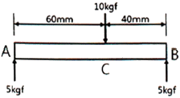
- 10kgfㆍmm
- -10kgfㆍmm
- 100kgfㆍmm
- -100kgfㆍmm
(정답률: 60%)
34. 저항의 직ㆍ병렬 회로에 대한 설명으로 틀린 것은?
- 저항 직렬회로에서 전류는 어느 지점에서나 항상 일정하다.
- 저항 직렬회로에서 저항 단자전압의 크기는 저항의 크기에 비례한다.
- 저항 병렬회로에서 저항 단자전압의 크기는 저항의 크기에 반비례한다.
- 저항 병렬회로에서 각 저항에 흐르는 전류의 크기는 저항의 크기에 반비례한다.
(정답률: 50%)
35. 다음 설명에 해당하는 법칙은?
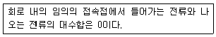
- 플레밍의 왼손 법칙
- 플레밍의 오른손 법칙
- 키르히호프의 전류법칙
- 키르히호프의 전압법칙
(정답률: 83%)
36. 속력의 정의로 옳은 것은?
- 속력=시간÷이동거리
- 속력=이동거리×시간
- 속력=이동거리÷시간
- 속력=이동거리+(시간)2
(정답률: 68%)
37. 면적이 2.5m2인 가공물이 작업대 위에 놓여 있을 때, 이 가공물의 무게가 50kgf라면 작업대가 받는 압력[kgf/m2]은 얼마인가?
- 5
- 10
- 20
- 25
(정답률: 71%)
38. 유압 실린더가 기반으로 하고 있는 원리 또는 법칙은?
- 뉴턴의 법칙
- 아베의 원리
- 파스칼의 원리
- 베르누이의 법칙
(정답률: 84%)
39. 바하(Bach)의 축 공식에서 연강축의 길이 1m당 비틀림 각은 몇 도(°) 이내로 제한 하는가?
- 1/4
- 1/6
- 1/8
- 1/10
(정답률: 59%)
40. 도선에 1A의 전류가 흐를 때 1초간에 통과하는 전하량은?
- 1Ω
- 1C
- 1V
- 1W
(정답률: 81%)
3과목: 자동제어
41. 릴리프밸브의 크랭킹 압력이 60kgf/cm2이고, 전량 압력이 100kgf/cm2이면, 이 밸브의 압력 오버라이드는 몇 kgf/cm2인가?
- 40
- 60
- 100
- 160
(정답률: 64%)
42. PLC 제어의 장점으로 틀린 것은?
- 신뢰성 및 보수성 향상
- 프로그램 호환성이 높음
- 긴 수명 및 고속제거 가능
- 설계 및 테스트 변경 등이 용이
(정답률: 64%)
43. 응답이 최초로 희망 값의 50%에 도달하는데 필요한 시간을 무엇이라 하는가?
- 상승시간
- 응답시간
- 지연시간
- 정정시간
(정답률: 64%)
44. 1차 시스템의 시정수에 관한 다음 설명 중 옳은 것은?
- 시정수가 클수록 오버슈트가 크다.
- 시정수가 클수록 정상상태오차가 작다.
- 시정수가 작을수록 응답속도가 빠르다.
- 시정수는 지연시간에 영향을 받지 않는다.
(정답률: 66%)
45. 다음 중 DC모터의 속도를 제어하는 방법으로 가장 적합한 것은?
- ATM
- PAM
- PWM
- SSP
(정답률: 67%)
46. 다음 개루프 전달함수에 대한 제어시스템의 근궤적인 개수는?
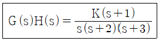
- 1
- 2
- 3
- 4
(정답률: 70%)
47. 4의 라플라스 변환식은?
- 4
- 4S
- S/4
- 4/S
(정답률: 74%)
48. 신호 흐름 선도의 요소에 대한 설명 중 틀린 것은?
- 경로는 동일한 진행방향을 갖는 연결가지의 집합이다.
- 경로 이득은 경로를 형성하는 가지들의 이득의 합이다.
- 출력 마디는 들어오는 가지만 있고 밖으로 나가는 가지는 없다.
- 입력 마디는 밖으로 나가는 가지만 있고 돌아오는 가지는 없다.
(정답률: 50%)
49. 래더 다이어그램에 대한 설명으로 옳은 것은?
- 릴레이 제어회로의 표현에 사용된다.
- 위치제어 문제의 정확한 해결에 사용된다.
- 프로그램 메모리에 저장되는 프로그램이다.
- 제어 시스템에서 부품의 연결을 나타내는 계획도이다.
(정답률: 56%)
50. 제어용 각종 기기 중 주 회로의 단락사고 등에 의한 과전류로부터 회로를 보호하는 장치로 사용되는 것은?
- 릴레이
- 차단기
- 카운터
- 타이머
(정답률: 81%)
51. 다음 1 atm과 같은 압력은?
- 100mAq
- 1.013bar
- 1000mmHg
- 10.336kgf/m2
(정답률: 76%)
52. 트리거 입력 펄스가 들어올 때마다 Q의 출력이 반전을 하는 플립플롭은?
- D
- T
- JK
- RS
(정답률: 56%)
53. 다음 중 되먹임 제어계의 안정도와 가장 관련이 깊은 것은?
- 역률
- 효율
- 시정수
- 이득여유
(정답률: 57%)
54. PLC의 입ㆍ출력장치의 요구사항에 해당하지 않는 것은?
- 외부 기기와 전기적 규격이 일치해야 한다.
- 디지털 방식의 외부기기만 사용할 수 있다.
- 입ㆍ출력의 각 접점 상태를 감시할 수 있어야 한다.
- 외부 기기로 부터의 노이즈가 CPU쪽에 전달되지 않도록 해야 한다.
(정답률: 73%)
55. 하나의 전송 매체에 여러 채널의 데이터를 실어서 동시에 전송하는 방식의 통신 방식은?
- 토큰 링(token ring)
- 베이스 밴드(base band)
- 브로드 밴드(broad band)
- 캐리어 밴드(carrier band)
(정답률: 66%)
56. NC 기계의 동력전달 방법으로 서보모터와 볼스크루 축을 직접 연결하여 연결부위의 백래시 발생을 방지하는 기계요소로 적합한 것은?
- 기어
- 체인
- 커플링
- 타이밍벨트
(정답률: 75%)
57. 다음은 C언어로 스위치와 DC모터를 제어하는 프로그램의 일부이다. 프로그램에 대한 설명으로 틀린 것은?
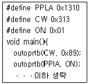
- #define ON 0x01 : ON을 0x01로 정의한다.
- outportb(CW, 0x89); : 0x01번지에 0x89값을 출력한다.
- outportb(PPIA, ON); : 0x310번지를 통해서 1을 출력한다.
- #define PPIA 0x310 : PPI 8255의 A포트를 0x310번지로 지정한다.
(정답률: 55%)
58. 전달함수 G(s)=1+sT인 제어계에서 wT=1000일 때, 이득은 약 몇 [dB]인가?
- 40
- 50
- 60
- 70
(정답률: 55%)
59. 제어계를 동작시키는 기준으로서 제어계에 입력되는 신호는?
- 조작량
- 궤환 신호
- 동작 신호
- 기준입력 신호
(정답률: 46%)
60. DC 서보모터의 설계 시 응답을 개선하기 위하여 고려할 사항으로 틀린 것은?
- 코트의 맥동을 작게 한다.
- 기계적 시정수를 작게 한다.
- 순시 최대 토크까지의 선형성을 높인다.
- 전기적 시정수(인덕턴스/저항)를 크게 한다.
(정답률: 73%)
4과목: 메카트로닉스
61. 다음 진리표의 논리 심볼로 옳은 것은?
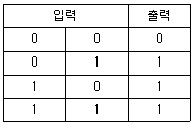
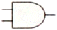
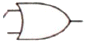
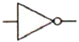
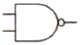
(정답률: 77%)
62. 프로그램 카운터의 설명으로 옳은 것은?
- 입ㆍ출력 신호를 제어한다.
- 프로그램에서 타이머, 카운터의 기능을 수행한다.
- CPU 안에 정보가 저장되고, 처리될 장소를 제공한다.
- 프로그램에서 다음에 수행될 명령어의 주소를 기억한다.
(정답률: 56%)
63. 부품 가공 시 중심을 잡거나 정반 위에서 공작물을 이동시켜 평행선을 그을 때 사용되는 공구는?
- 펀치
- 컴퍼스
- 서피스 게이지
- 버니어 캘리퍼스
(정답률: 72%)
64. 광선 센서의 일반적인 특징으로 틀린 것은?
- 검출거리가 길다.
- 응답속도가 느리다.
- 검출물체의 대상이 넓다.
- 비접촉식으로 물체를 검출한다.
(정답률: 81%)
65. 쾌속조형기술이라고도 하며 컴퓨터에서 생성된 3차원 형상을 조형하여 모델을 만드는 것은?
- boring
- honing
- burnishing
- rapid prototyping
(정답률: 80%)
66. 스택(stack)에 대한 설명으로 옳은 것은?
- 먼저 입력된 자료가 먼저 출력된다.
- 자료의 입출력 포인터가 두 곳에 있다.
- 마지막에 입력된 자료가 먼저 출력된다.
- 자료가 입력될 때의 포인터와 출력될 때의 포인터가 다르다.
(정답률: 63%)
67. 마이크로프로세서의 ALU(Arithmetic Losic Unit)에 기본 연산방법은?
- 가산
- 감산
- 곱셈
- 나눗셈
(정답률: 80%)
68. 윤활작용이 주목적인 절삭제는?
- 극압유
- 수용성 절삭유
- 지방유
- 혼합유
(정답률: 51%)
69. 밀링머신에 대한 설명 중 틀린 것은?
- 상향절삭은 마찰저항은 작으나 백래시가 크다.
- 슬로팅 장치는 커터를 상하로 움직여 키홈을 절삭한다.
- 분할대는 공작물을 일정한 간격으로 등분하는데 사용된다.
- 하향절삭은 절삭력이 하향으로 작용하여 가공물의 고정이 유리하다.
(정답률: 69%)
70. 스테핑모터의 종류가 아닌 것은?
- 브러시형 스테핑모터
- 영구자석형 스테핑모터
- 하이브리드형 스테핑모터
- 가변 릴렉턴스형 스테핑모터
(정답률: 59%)
71. 서미스터(Thermistor)의 특징으로 틀린 것은?
- 서미스터는 전압이 발생되는 소자이다.
- 서미스터는 온도변화에 반응하는 소자이다.
- 정의 온도계수를 갖는 서미스터는 PTC이다.
- 부의 온도계수를 갖는 서미스터는 NTC이다.
(정답률: 69%)
72. 스테핑 모터의 특징으로 틀린 것은?
- 정지 시 홀딩 토크가 없다.
- 정ㆍ역 전환 및 변속이 용이하다.
- 저속 시 진동 및 공진의 문제가 있다.
- 개루프(open loop)에서 제어성능이 좋다.
(정답률: 45%)
73. 데이터처리(연산)명령이 아닌 것은?
- 산술명령
- 저장명령
- 시프트명령
- 논리연산명령
(정답률: 59%)
74. 120V의 전압을 가할 때 500mA의 전류가 흐르는 백열전등의 저항(R)과 전력(P)은 각각 얼마인가?
- R=0.24Ω, P=1.2W
- R=0.24Ω, P=6W
- R=240Ω, P=60W
- R=240Ω, P=120W
(정답률: 65%)
75. 금속에서만 동작하는 센서는?
- 광 센서
- 유도형 센서
- 온도형 센서
- 용량형 센서
(정답률: 76%)
76. 십진법의 57을 BCD(Binary Coded Decimal)진법으로 변환한 값은?
- 01010111BCD
- 01110101BCD
- 01110111BCD
- 11010111BCD
(정답률: 73%)
77. 이상적인 연산증폭기의 입력 임피던스(Ω)의 값으로 옳은 것은?
- 0
- ∞
- 10
- 100
(정답률: 76%)
78. 다음 중 입력장치로만 짝지어진 것은?
- 릴레이, 타이머, 카운터
- 타이머, 카운터, 엔코더
- 습소센서, 토글스위치, 릴레이
- 푸시버튼, 캠스위치, 토글스위치
(정답률: 84%)
79. 저항값이 5Ω과 10Ω인 저항이 직렬로 접속되었을 때 100V의 전압을 인가했을 경우 전체 회로에 흐르는 전류[A]는?
- 6.7
- 10
- 20
- 30
(정답률: 77%)
80. 페러데이 법칙에 대한 설명으로 옳은 것은?
- 전자유도에 의해 회로에 발생하는 기전력은 자속 쇄교수에 시간을 더한 값이다.
- 전자유도에 의해 회로에 발생하는 기전력은 자속의 변화 방향으로 유도된다.
- 전자유도에 의해 회로에 발생하는 기전력은 단위 시간당 자속 쇄교수에 반비례한다.
- 전자유도에 의해 회로에 발생하는 기전력은 단위 시간당의 자속 쇄교수에 비례한다.
(정답률: 48%)